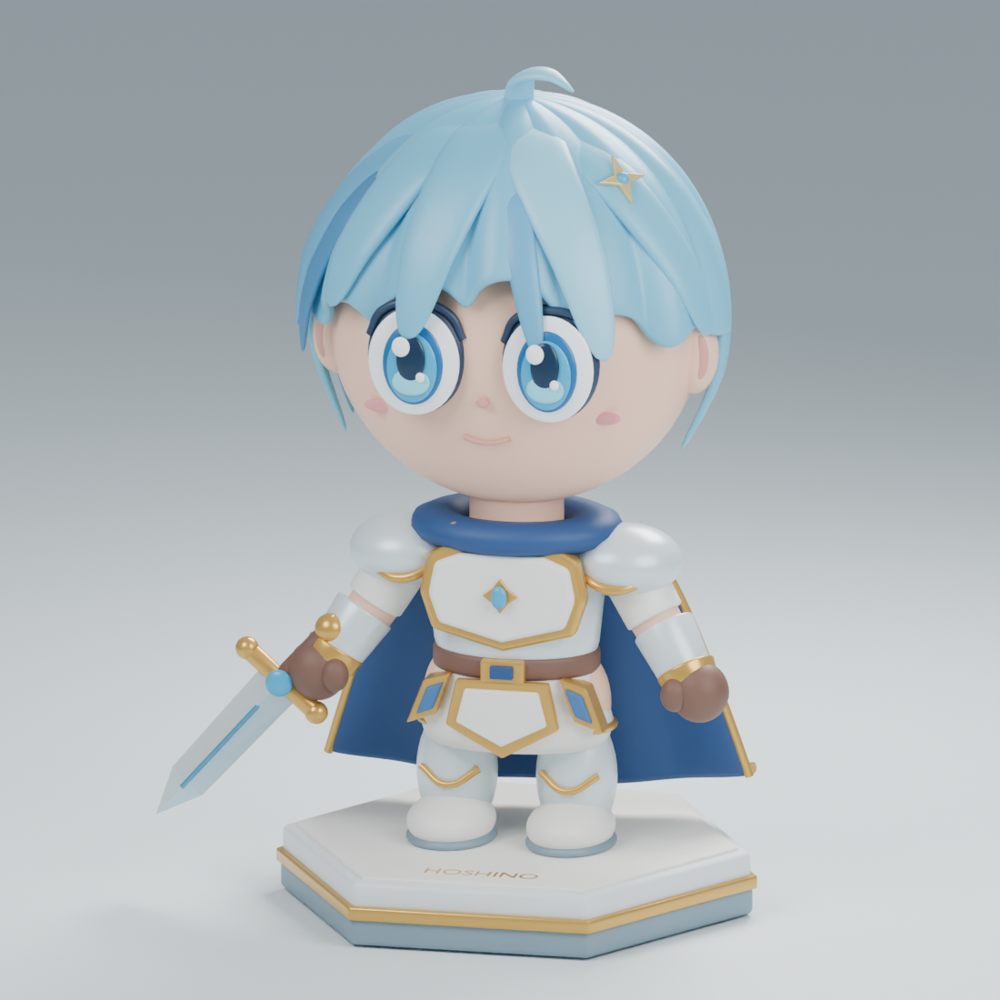
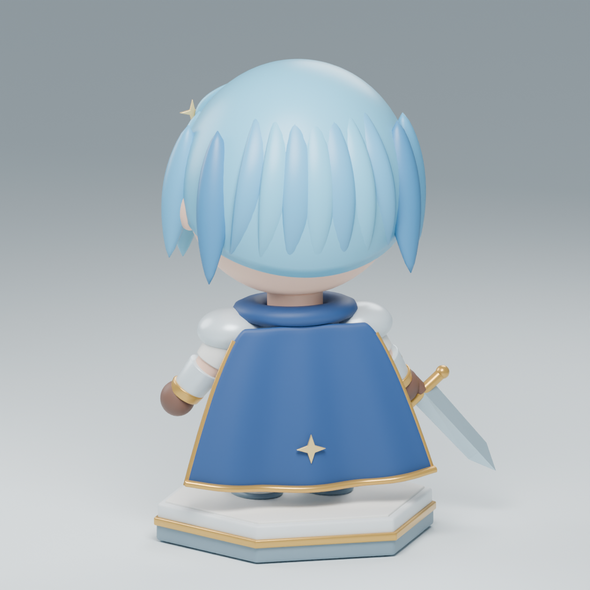

✦ FIGURA N° 01 AURORA COLLECTION
Hoshino.
Il piccolo guerriero
dell’aurora.
Un grande cuore, una spada luminosa e un pizzico di magia. Incontra Hoshino, una piccola statuetta chibi pronta per una grande avventura.
UN PERSONAGGIO, INFINITE STORIE

Anteprima 3D non disponibile. Scarica il GLB per aprirlo in un altro programma.
✦ L’ARTE DEL PERSONAGGIO
Piccoli dettagli,
grande personalità.
Ogni elemento è parte del modello 3D, dal riflesso negli occhi alla stella sul mantello.

Uno sguardo che brilla
Occhi anime a più livelli, un sorriso delicato e ciocche azzurre che incorniciano il viso.
Pronto all’avventura
Armatura perla e oro, mantello blu e una spada sfaccettata, disegnati per raccontare la sua storia.
Da ogni angolazione
Una base esagonale e dettagli anche sul retro. Ruota il modello per scoprirli tutti.
AZZURRO / PERLA / ORO / BLU NOTTE
✦ PORTA HOSHINO CON TE
La tua prossima avventura.
Scegli il formato giusto per il tuo progetto. Tutti i file contengono il modello aggiornato.
Modello a colori con materiali PBR.
SCARICA IL FILE ↗ ↘OBJ + MTLMODELLAZIONE 3DGeometria e materiali insieme in uno ZIP.
SCARICA LO ZIP ↗ ↘STLSTAMPA 3D · 80 MMUn unico volume, da verificare nello slicer.
SCARICA IL FILE ↗ ↘BLENDSCENA BLENDERPersonaggio, materiali e luci modificabili.
SCARICA IL FILE ↗Il modello è statico e non riggato. Per la stampa, controlla spessori e supporti nel tuo slicer. Guida alla stampa ↗